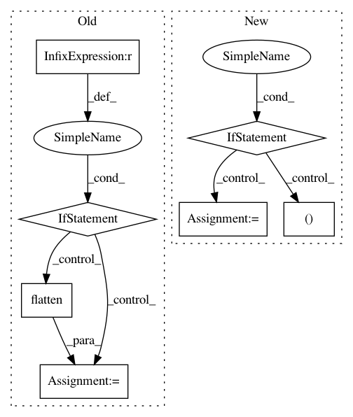

84dd314904ba2004ab35bbea65c5f2cb684e073c,autosklearn/estimators.py,AutoSklearnClassifier,predict,#AutoSklearnClassifier#Any#,273
Before Change
predicted_classes.append(output_predicted_classes)
prediction = np.vstack(predicted_classes)
if self._n_outputs > 1:
prediction = prediction.transpose()
else:
prediction = prediction.flatten()
return prediction
def predict_proba(self, X):
Predict probabilities of classes for all samples X.
After Change
predicted_indexes = super(AutoSklearnClassifier, self).predict(X)
if self._n_outputs == 1:
predicted_classes = self._classes[0].take(predicted_indexes)
return predicted_classes
else:
n_samples = predicted_indexes.shape[0]
predicted_classes = np.zeros((n_samples, self._n_outputs), dtype=object)
for k in six.moves.range(self._n_outputs):
output_predicted_indexes = predicted_indexes[:, k]
predicted_classes[:, k] = self._classes[k].take(output_predicted_indexes)
return predicted_classes
def predict_proba(self, X):
Predict probabilities of classes for all samples X.
Parameters
In pattern: SUPERPATTERN
Frequency: 3
Non-data size: 7
Instances
Project Name: automl/auto-sklearn
Commit Name: 84dd314904ba2004ab35bbea65c5f2cb684e073c
Time: 2016-02-24
Author: a.domashnev@gmail.com
File Name: autosklearn/estimators.py
Class Name: AutoSklearnClassifier
Method Name: predict
Project Name: automl/auto-sklearn
Commit Name: 432331c2ea292f2f8b756901ea3c8bda04817ec5
Time: 2017-10-20
Author: feurerm@informatik.uni-freiburg.de
File Name: autosklearn/estimators.py
Class Name: AutoMLClassifier
Method Name: _process_target_classes
Project Name: CamDavidsonPilon/lifelines
Commit Name: 020a69a5d64cf60e365ba74c595fb3082f254e58
Time: 2020-03-05
Author: cam.davidson.pilon@gmail.com
File Name: lifelines/fitters/__init__.py
Class Name: ParametricRegressionFitter
Method Name: _fit_model